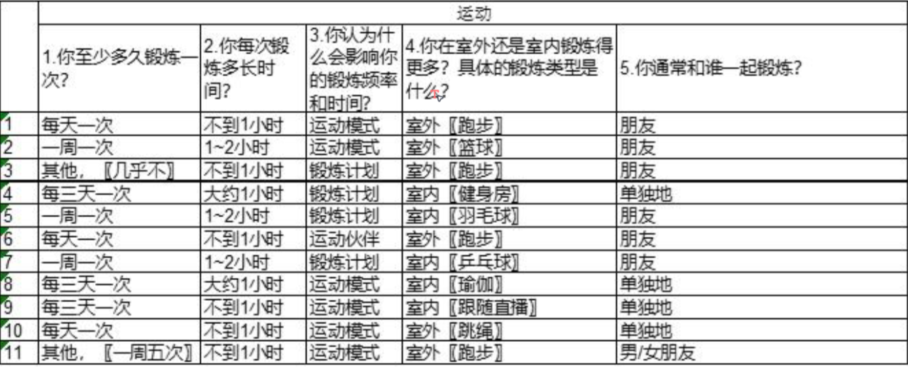
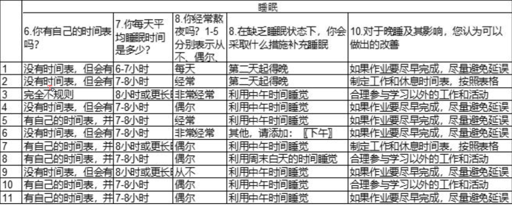
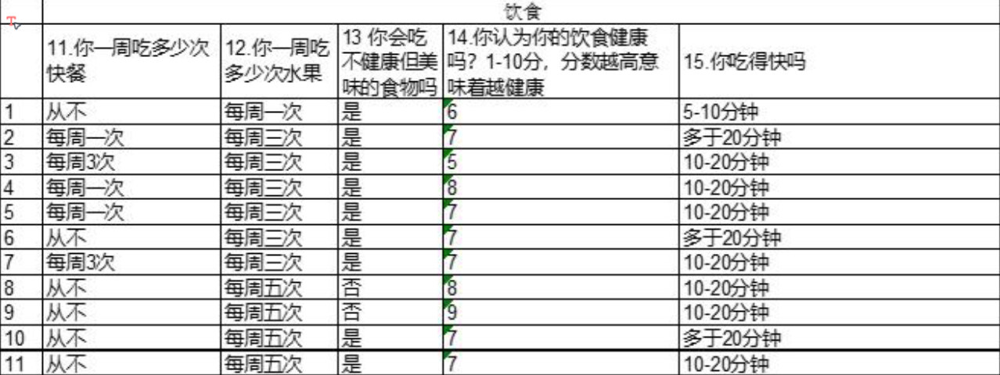

队伍信息 🚀
邓卓凡
姜华巍
王昊轩
项目提议
我们打算先通过采访和调查获取用户的数据，分析用户的习惯和偏好、 需求，将用户的需求作为我们 APP 的首要目标，以用户能够接受的方式规范用户的作息、 饮食和运动习惯
数据收集计划
我们打算对从精神面貌、体型等角度入手，调查同学们的饮食、运动和作息是否跟他们的精神状态以及身体健康有关联。
Survey Data:



采访原文
Interview 采访 1
Topic1：Diet
Q1：你会按时吃饭吗？ A：我会按时吃饭。
Q2：你一天吃多少顿？如果少于三餐，是什么原因造成的？ A：我每天吃三顿。
Q3：你吃饭的时候会考虑营养平衡吗？你认为一餐要怎么搭配才健康？ A：会考虑，但不是首要因素。我认为一餐要荤素搭配才健康。
Q4：你会因为食物的美味而暴饮暴食吗？又会不会因为菜不好吃而只吃一点？ A：会的，味道是我吃饭时考虑的首要因素。
Q5：你会用饮料代替水吗？你对饮料有什么看法？ A：我不用饮料代替水，因为我觉得饮料对身体不好。
Topic2：Regular work and rest
Q1：您对作息规律有什么看法，能简单介绍一下您平时的作息情况吗？ A：我认为作息规律就是每晚 11 点睡觉，早上 7 点起床，坚持睡午觉。我的作息是 12
点睡，早上 7 点起床，每天都会睡半小时午觉。
Q2：如果你在日常工作中晚睡，你晚睡的原因是什么？如果你晚上不晚睡，试想在什
么情况下你会选择晚睡来解决未解决的问题？ A：晚睡的原因就是因为工作多，只能挤出自己的睡眠时间来完成了。
Q3：在你心目中，正常的、符合客观规律的最佳睡觉时间是什么？ A：晚上 10-11 点睡觉，早上 6-7 点起床。
Q4：你身边的同学的作息时间是怎样的，你认为他们的作息习惯对他们平时的学习和
生活状态有没有影响？ A：我的舍友通常凌晨三四点才睡，然后第二天睡到中午，我认为这对他们的学习和生
活状态是有影响的。
Q5：你对自己的作息时间是否满意，你能想到什么办法来改善自己的作息时间？ A：我对我的作息时间不是很满意，因为我的理想睡眠时间是 11 点，但是我总会拖延 到 12 点甚至往后。我想如果我把手机放床下的话，可能会有所改善。
Topic3：Sport
Q1：你有锻炼身体的习惯吗，有志同道合的人一起锻炼吗？ A：有锻炼的习惯，但是是一个人运动。
Q2：结合你自己的经验，你认为运动除了提高身体素质外，还有哪些好处？ A：可以使自己得到放松吧，在跑步的过程中，大脑会处于放空的状态，不去想各种复
杂的事情。
Q3：你是否经常去健身房锻炼？或者说你认为自己健身和在健身房健身有什么区别
吗？ A：我不去健身房锻炼，对健身房也不太了解。
Q4：你认为锻炼计划和专属指导是必要的还是可有可无的？如果有免费的定制计划，
你愿意接受吗？ A：我锻炼的目的不是为了让自己更强壮，主要是放松自己的身心，所以我不需要计划
和指导。
Q5：你是否使用过手机 APP 来辅助运动？这些是什么？你认为应用的这些设置会激励
你运动吗？ A：我也不使用 APP 来辅助运动，因为我不在意自己跑了多远，跑了多久，只要自己跑
到满意就行。
Interview 采访 2
Topic1：Diet Q1：你会按时吃饭吗？ A：不会，我是饿了就吃。
Q2：你一天吃多少顿？如果少于三餐，是什么原因造成的？ A：一天吃 1-2 顿，因为我有熬夜的习惯，有时候睡到第二天下午，玩会手机就到傍晚 了，这时候就会只吃一顿，如果中午能起来的话就中午一顿，晚上一顿。
Q3：你吃饭的时候会考虑营养平衡吗？你认为一餐要怎么搭配才健康？ A：不会。我没想过健康的一顿饭是什么样的。
Q4：你会因为食物的美味而暴饮暴食吗？又会不会因为菜不好吃而只吃一点？ A：暴饮暴食不至于，但是我只吃我喜欢吃的。
Q5：你会用饮料代替水吗？你对饮料有什么看法？A：我经常喝饮料，但是还没到代替水的地步，毕竟饮料要钱。我认为饮料并不像许多人说的那样损害健康，偶尔喝一点可以让心情愉悦。
Topic2：Regular work and rest
Q1：您对作息规律有什么看法，能简单介绍一下您平时的作息情况吗？ A：我认为规律作息就是每天按时睡觉，按时起床。我作息就不是很规律，每天晚上熬
夜，睡觉时间不稳定。
Q2：如果你在日常工作中晚睡，你晚睡的原因是什么？如果你晚上不晚睡，试想在什
么情况下你会选择晚睡来解决未解决的问题？ A：我晚睡的原因就是玩游戏。
Q3：在你心目中，正常的、符合客观规律的最佳睡觉时间是什么？ A：早于 12 点睡觉吧，但是我做不到。
Q4：你身边的同学的作息时间是怎样的，你认为他们的作息习惯对他们平时的学习和
生活状态有没有影响？ A：他们的作息时间比我好一点，但是也熬夜。至于他们的学习和生活状态，我觉得和 我没有什么不同，所以我认为没有影响。
Q5：你对自己的作息时间是否满意，你能想到什么办法来改善自己的作息时间？ A：还算满意吧，虽然我熬夜，但是我每天都是睡到自然醒，我认为我睡够时间就行。
Topic3：Sport
Q1：你有锻炼身体的习惯吗，有志同道合的人一起锻炼吗？ A：我没有运动的习惯。
Q2：结合你自己的经验，你认为运动除了提高身体素质外，还有哪些好处？ A：可以让人看起来更精神？我看身边经常运动的人都挺活力的。
Q3：你是否经常去健身房锻炼？或者说你认为自己健身和在健身房健身有什么区别 吗？
A：不去，我认为没有区别。
Q4：你认为锻炼计划和专属指导是必要的还是可有可无的？如果有免费的定制计划，
你愿意接受吗？ A：我认为计划是有必要的，对于我这种不爱运动的人来说，没有人指导和规划我，我
可能这辈子都不会运动吧。
Q5：你是否使用过手机 APP 来辅助运动？这些是什么？你认为应用的这些设置会激励
你运动吗？
A：不使用。如果有 APP 能激励我运动我早就去运动了。
Interview 采访 3
Topic1：Diet
Q1：你会按时吃饭吗？ A：会的。
Q2：你一天吃多少顿？如果少于三餐，是什么原因造成的？ A：两顿，因为我会熬夜，第二天起来就已经错过早餐时间了。
Q3：你吃饭的时候会考虑营养平衡吗？你认为一餐要怎么搭配才健康？ A：我吃饭的时候会选择一荤一素，因为我觉得这样比较健康。
Q4：你会因为食物的美味而暴饮暴食吗？又会不会因为菜不好吃而只吃一点？ A：如果我尝到一个食物美味，我会下次再吃一次，而不会暴饮暴食。如果菜不好吃，
我也不会浪费。
Q5：你会用饮料代替水吗？你对饮料有什么看法？ A：我很少喝饮料，我觉得饮料不好喝。
Topic2：Regular work and rest
Q1：您对作息规律有什么看法，能简单介绍一下您平时的作息情况吗？ A：我觉得作息规律是每天按时睡觉按时起床。我虽然熬夜，但是我的作息还是挺规律
的，每天凌晨四点睡觉，第二天中午起床。
Q2：如果你在日常工作中晚睡，你晚睡的原因是什么？如果你晚上不晚睡，试想在什
么情况下你会选择晚睡来解决未解决的问题？ A：我晚睡的原因是玩游戏，我不会因为工作完成不了而晚睡，大不了第二天再做。
Q3：在你心目中，正常的、符合客观规律的最佳睡觉时间是什么？ A：我觉得只要每天按时睡觉，睡够时间，就不需要在意什么时候睡，所以我觉得我现
在作息挺健康的。
Q4：你身边的同学的作息时间是怎样的，你认为他们的作息习惯对他们平时的学习和
生活状态有没有影响？ A：身边倒是有一个早睡早起的，他的生活状态和我没有什么差别，但是他的学习状态 比我好，但是我认为这不是作息时间影响的，只是我不爱学。
Q5：你对自己的作息时间是否满意，你能想到什么办法来改善自己的作息时间？ A：满意，不需要改善。
Topic3：Sport
Q1：你有锻炼身体的习惯吗，有志同道合的人一起锻炼吗？ A：有的，每次去运动的时候都会叫上舍友。
Q2：结合你自己的经验，你认为运动除了提高身体素质外，还有哪些好处？
A：可以加强意志力，运动是一个很累的过程，但是坚持下来的话，我会变得更加坚强。
Q3：你是否经常去健身房锻炼？或者说你认为自己健身和在健身房健身有什么区别 吗？ A：我不去健身房，我觉得健身房太贵了。健身房的设备比较专业吧，可以减少运动带
来的损伤。
Q4：你认为锻炼计划和专属指导是必要的还是可有可无的？如果有免费的定制计划，
你愿意接受吗？ A：不是可有可无的，但也不是必要的， 我觉得看人吧，如果是为了健身的话，锻炼
计划喝专属指导就是必要的。我不太愿意接受定制计划，因为我锻炼的时间不固定，一周就 一两次，我不喜欢被约束的感觉。
Q5：你是否使用过手机 APP 来辅助运动？这些是什么？你认为应用的这些设置会激励
你运动吗？ A：我是用 KEEP 来辅助运动，并不是因为它会激励我，而是它能帮我记录配速和距离，
帮助我判断运动量是否足够。
Interview 采访 4
Topic1：Diet
Q1：你会按时吃饭吗？ A：会。
Q2：你一天吃多少顿？如果少于三餐，是什么原因造成的？ A：我吃两顿，我没有早起的习惯，所以我是不吃早餐的。
Q3：你吃饭的时候会考虑营养平衡吗？你认为一餐要怎么搭配才健康？ A：我不会考虑营养平衡，我认为一餐不要太油腻就行。
Q4：你会因为食物的美味而暴饮暴食吗？又会不会因为菜不好吃而只吃一点？ A：不会因为食物美味而暴饮暴食，因为我觉得吃撑了反而是一种受罪。我不挑食，没
有我不喜欢吃的菜。
Q5：你会用饮料代替水吗？你对饮料有什么看法？ A：代替水倒是不至于，但是我也常喝。我认为喝多了对身体不好，适量的话是没问题
的。
Topic2：Regular work and rest
Q1：您对作息规律有什么看法，能简单介绍一下您平时的作息情况吗？ A：作息规律是早睡早起吧，我的作息情况正如前面提到的，我每天都会熬夜，然后睡
到自然醒，所以没有早上。
Q2：如果你在日常工作中晚睡，你晚睡的原因是什么？如果你晚上不晚睡，试想在什
么情况下你会选择晚睡来解决未解决的问题？
A：晚睡的原因是玩游戏，大四没有什么任务啊，每天都是玩玩玩。
Q3：在你心目中，正常的、符合客观规律的最佳睡觉时间是什么？ A：我觉得早起是必要的，如果起床太晚的话，就会错过早餐，对身体不好吧。
Q4：你身边的同学的作息时间是怎样的，你认为他们的作息习惯对他们平时的学习和
生活状态有没有影响？ A：我身边的同学有早睡早起的，有和我一样熬夜的。早睡早起的同学明显比熬夜的同
学更精力充沛和有干劲学习。
Q5：你对自己的作息时间是否满意，你能想到什么办法来改善自己的作息时间？ A：我对我的作息是不满意的，但是我控制不住我自己。要改善自己的作息时间的话要
从手机开始吧。
Topic3：Sport
Q1：你有锻炼身体的习惯吗，有志同道合的人一起锻炼吗？ A：我没有锻炼的习惯，但是朋友会偶尔叫上我一起去运动，那我也会去。
Q2：结合你自己的经验，你认为运动除了提高身体素质外，还有哪些好处？ A：可以让我收获满足感，就运动很长时间，然后就会觉得很爽。
Q3：你是否经常去健身房锻炼？或者说你认为自己健身和在健身房健身有什么区别 吗？
A：不去，我觉得健身房更有氛围吧。
Q4：你认为锻炼计划和专属指导是必要的还是可有可无的？如果有免费的定制计划，
你愿意接受吗？ A：我认为对于常运动的人来说，锻炼计划和专属指导是必要的，对于我这种偶尔动一
下的人来说就是可有可无的。有免费的定制计划的话，等我什么时候想运动了再说吧。
Q5：你是否使用过手机 APP 来辅助运动？这些是什么？你认为应用的这些设置会激励
你运动吗？
A：不用，跟着朋友运动就完事了！